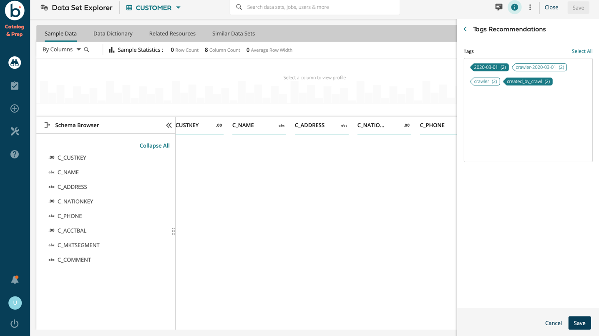
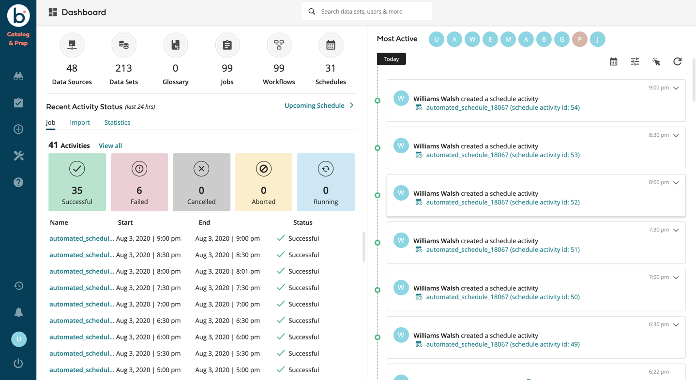
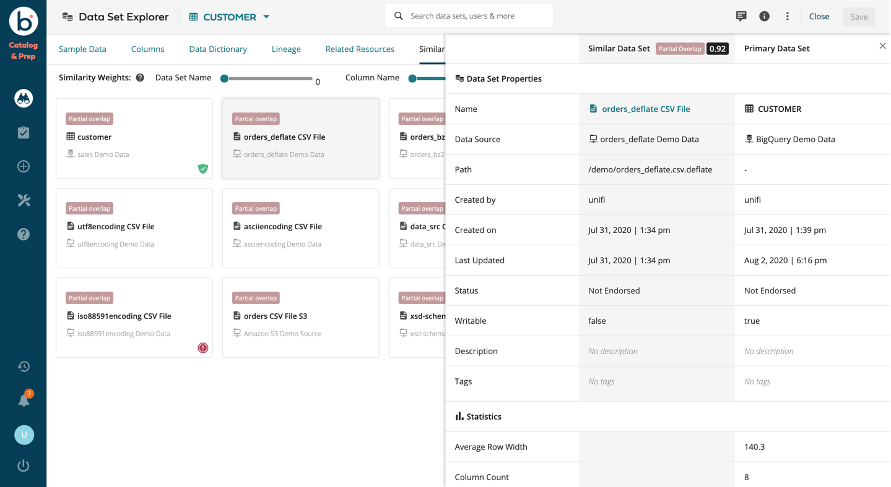
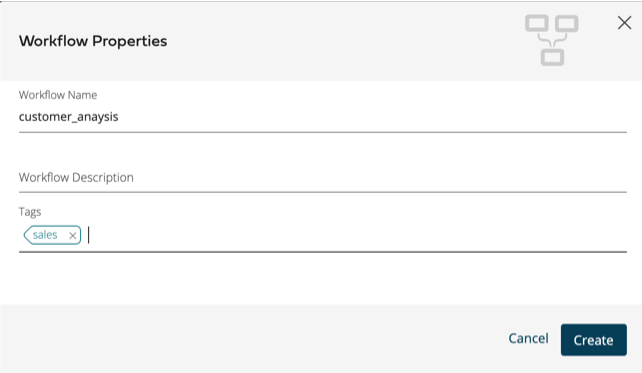

The Boomi Data Catalog & Prep is the solution for self-service data and business intelligence. The Boomi Data Catalog & Prep allows you to:
Discover, organize, and catalog your data, wherever it is located, in whatever form it is in.
Prepare your data. The Boomi Data Catalog & Prep provides AI tools that simplify the jobs to just a few clicks.
Secure, protect and manage access to your data by role, and by dataset, row, and column.
The Boomi Data Catalog & Prep helps the enterprise more quickly and accurately discover, acquire, and transform your data so that it can be combined with existing data and analyzed using business intelligence and visualization tools to extract business insights.
The Boomi Data Catalog & Prep provides a browser-based data integration software solution. The Boomi platform runs as a client to the data store. Users interact with the Boomi platform through a self-service graphical user interface.
With the Boomi Data Catalog & Prep, business analysts can select and integrate their data sets without having to write code or involve IT personnel. This allows the analyst to pursue "what if" scenarios with the data and develop business insights much more quickly than with traditional hand-coded programming.
The Boomi Data Catalog & Prep is a data integration platform built natively on top of the Hadoop ecosystem. It uses the Hadoop Distributed File System (HDFS) as the data store and works with various Hadoop execution components including Hive and MapReduce for data transformation.
Software Overview
DCP provides a browser-based data integration software solution that runs as a client to the datastore. Users interact with DCP through a self-service graphical user interface.
Diverse data sources are automatically parsed, normalized, and presented in a familiar tabular format – with no custom programming or manual cleanup.
With DCP, business analysts can select and integrate their dataset without having to write code or involve IT personnel. This allows the analyst to pursue "what if" scenarios with the data and develop business insights much more quickly than with traditional hand-coded programming.
Diverse Data Source
Enterprises need the ability to co-mingle datasets from various data sources, including cloud, on-premise, and social. DCP provides rich connectivity to heterogeneous data sources including databases, Hadoop file systems, Amazon Simple Storage Service (S3), Salesforce and Marketo services, and more. Both structured and semi-structured data can be integrated for use in analysis scenarios.
To integrate the data more quickly, DCP automatically applies complex data parsers and data logic to semi-structured and unstructured data. In social media data, for example, some structure exists, but much of the data must be parsed and normalized before any analysis can occur.
After passing through the DCP data parser, the data is presented to the business analyst user in the familiar format of rows and columns. Without DCP, software developers would be required to hand code the integration with very technology-oriented tools.
Data Analysis Overview
DCP connects the user directly to data assets and brings diverse data sources together for insight discovery. For users who have the Data Analyst or Administrator role, data analysis and insight is gained using a sequence of steps performed through the browser-based user interface:
Select datasets from a wide variety of data sources
Join datasets
Add derived column values
Create data filters
Define aggregation
Schedule transform jobs and view output
DCP's open platform seamlessly integrates with a wide range of analytics and data visualization tools, including Tableau.
Logging In
Open a web browser and use the following URL to access the DCP web application, where hostname is the IP address or public DNS hostname of the Boomi host machine and port is the HTTP port entered during setup (the default port is 8000):
http://hostname:port/datai
For example:
http://localhost:8000/datai/
Password Assistance
Any DCP user, except for LDAP users, can request to reset their own password. The password can be changed in this way only once in a 24-hour period.
Click Forgot Password on the DCP login screen.
Enter the user’s email address.
DCP sends a password reset link to the email address associated with the user’s email address. If it matches the address configured in an active user’s account.
Click the link in the email.
Enter the desired new password.
Using the search Interface
You can find what you are looking for from any place in the DCP UI – including the first welcome screen. When you first log in to the DCP user interface, the Welcome Screen contains a search box allowing you to quickly start your search.
If you are just starting out, you might type "datasets" to see what data is available. If you have already defined several transform jobs, you might type "jobs" to get a list so you can run a job, check job output, or start a new job based on an old one. You can also run more sophisticated searches.
The Search dialog is now common to all pages in DCP. In the main Search dialog.
Clicking in the search box expands it and offers additional search options:
Recommendations - displays the Things to Try dialog providing templates to help you write search queries that mimic natural human speech. The search interface makes use of natural language processing (NLP), which translates questions phrased as ordinary phrases into database query language.
The Things to Try categories are:
Data Dictionary - searches on the data dictionary for the named column.
Column stats - provides statistics for a specific column in a dataset. You can ask for the average.
Dataset stats - provides row count, column count, and size statistics for a dataset.
Relations - provides relationship information about a term or dataset.
Permissions - displays user permissions for the specified dataset, column, or source.
Trending - displays the most common searches..
Pin - click the "star" to save any of your searches as a "favorite, or to "pin" it, making it easier to perform the same search again later. You can also "unpin" it by clicking off the star.
Dismiss - dismisses the current search parameters and returns the Search box to its original state.
If you have the appropriate user permissions, you can click Navigate to Dashboard to get an overview of all DCP objects and activity. Otherwise, click Navigate Away to use the DCP navigation bar and menu links to work with the objects for which you have permissions.
As you continue to use DCP, look for the search icon or search dialog in any screen that provides a list of objects. You can search for particular datasets, users, jobs, and so on by typing in the search field.
DCP also provides additional ways to narrow down your search. For example, when searching for datasets, you can first specify a data source to see only datasets from a single source. And you can use tags to categorize objects with any labels that have meaning in your unique usage situation.
When your search matches the name of a dataset, you can see how the dataset is related to jobs, schedules, and workflows, and how many columns are in the dataset. Each column is identified by an icon that denotes the type of data in the column, including PII data. And, for a job, you can see how many datasets, schedules, and workflows the job is related to.
Clicking the name of an item returned by the search, Dataset, Job, Workflow, etc., opens the object for inspection.
Click Back to Search to return to the search window.
Using Filter
Filters are available on all of the Summary pages and allow you to refine the information presented to you. The Summary pages are:
Datastores
Data Sources
Dataset Explorer
Prepare
Workflows
Schedules
For example, the Datastores Summary page filters by:
Keyword
Type
Adapter
Owner
Date modified
While the Data Sources Summary page filters by:
Keyword
Type
Owner
Status
Tags
Active filters are noted by the Filter icon which displays the number of filters active on a Summary page.
Click Reset to clear all filters. Click Refresh to refresh just the Summary table.
Using Tags
To categorize objects and make them easier to find and group, you can add tags to users, data sources, datasets, jobs, workflows, and schedules. A tag is a short text label. An object can have one or more tags, depending on how many categories the object belongs to.
Any user with permissions on an object can add or remove a tag. Tags can be added when creating an object or when editing an object. Tags are displayed in search results and summary pages. For example, you can use tags to filter the datasets when selecting a dataset for a new transform job.
A tag can have a maximum of 32 characters and can not contain spaces or special characters.
Tags Recommendation
When you are creating tags, you can click the Recommendation icon and DCP will suggest tags for you based on our AI algorithms.
For example, for our AI algorithms to suggest a tag for the dataset, click Summary
To add a tag to a dataset, click Edit Tags.
To view tag recommendations, click Recommendations. Choose the tags to add to the dataset and click Save.

In the Dataset Properties dialog, click in the Tags field, type the new tag, then press the spacebar. When you are finished adding tags, click DONE.
The tags appear in the DETAILS column of all of the Summary pages. You can also filter on them.
Using the Dashboard
The DCP Dashboard provides an overview of DCP objects and activity. The Dashboard can be viewed by users with the administrator or data analyst role. To display the Dashboard, click the Navigate to Dashboard link in the login screen or click the DCP icon in the upper left of the screen.
In the Dashboard, you can choose to view only objects for which you have permissions or view the objects that belong to all users in your organization. However, you can actually access and use data from only those items for which you have been granted permissions.
The plus icon (+) at the top of the Dashboard provides a convenient way to launch the most common tasks.
To customize the Dashboard, drag and drop any of the panels into a new location.
Dashboard Task
From the Dashboard, you can perform the following tasks:
View and modify your own user profile
Create a transform job
Define a workflow
Set up a schedule
Add a data source and grant other users permissions on it
Add a dataset and grant other users permissions on it (with some restrictions)
View lists of users and user groups
Click the links at the top of the Dashboard to navigate to other pages that list the existing dataset, transform jobs, and so on
Search for jobs, datasets, and other objects by name. This filters the Dashboard display so that you see only information related to the search item
View notifications, such as job status messages
Read the User Guide
From the Dashboard, users with Administrator accounts can perform the following additional tasks (for details, see the DCP Administrator’s Guide):
Modify software settings
Set up new user accounts and user groups
View and set up datastores
View and modify all objects defined in DCP (data sources, datasets, jobs, schedules, users, and so on)
Control which users can access all data sources and datasets

Using the BI Explorer and Tableau
The Tableau BI Explorer provides a Summary page of Tableau workbooks. Navigate to the Tableau workbooks from Discover > Tableau.
When you first view this page you will see the workbooks have a chain icon. There is also a left side panel with the name of your Tableau server.
The chain icon indicates that the current Boomi user is not mapped to the Tableau server user for the displayed workbooks. When you click Link and enter your Tableau credentials Boomi creates a mapping between your Boomi user and your Tableau user. You now have access to the workbooks.
The BI Tableau Summary page displays the Tableau workbooks in one of three states:
Chain icon -- no mapping has been created between the Boomi user and the Tableau server user.
Lock icon -- mapping has been created and the user does not have access to the workbook.
No icon -- mapping is complete and the user has access to the workbook.
After linking, or mapping your Boomi user credentials to your Tableau user credentials you now see the workbooks to which you have access.
Clicking on the workbook opens it and displays a list of your views from the workbook. Opening a view renders the view on the Boomi server.
Conversations
DCP users can engage in conversations by exchanging text messages within DCP regarding datasets and jobs. Conversations are useful for collaboration and communication to increase the effectiveness of teams using DCP.
To use conversations:
When viewing a dataset or job, click the Chat icon
From the Chat pane type messages and reply to messages from others.
Type comments at the bottom of the chat pane. In a comment, you can use the following special characters to address another user directly or insert a link to an object like another job or dataset:
Use the @ symbol followed by a user ID to directly address another user. DCP will display a list of suggestions to auto-complete the user ID as you type.
Use the # symbol followed by the name of a DCP object, like a job or dataset, to insert a hyperlinked reference to that object. DCP will display a list of suggestions to auto-complete the object as you type. Note: This requires NLP to be enabled from Settings.
PII information is noted by the PII icon in the PII columns.
Data Stores
A datastore describes a specific instance of a system external to DCP that holds data. For example, a datastore may represent an Oracle database, an Amazon S3 or Hadoop file system, a Salesforce account, or any other data storage system supported by DCP.
Datastores are available in the DCP user interface only after they have been added to DCP, usually by a DCP administrator. When the administrator adds a datastore, they are adding information about how to connect to an external system.
The datastores are external to DCP, so DCP needs a way to communicate with them. DCP provides a variety of datastore adapters for this purpose. A datastore is typically specified by a DCP datastore adapter and the parameters associated with that adapter. The parameters might include the host name, host IP address, port, and similar characteristics. For more information see "Adapters" and "Data Stores" in the DCP Administrator’s Guide.
Supported Data Stores
DCP supports the following datastore types:
Adobe Cloud
Amazon S3
Amazon EMR 5.8.0, 5.11.1 HDFS
Amazon EMR 5.8.0, 5.11.1 Hive
Apache HDFS 2.5.0, 2.6.0, 2.7.1, 2.7.3
Apache Hive 0.13.1, 1.1.0, 1.2.1
Azura Data Lake Store (ADLS)
Cisco Information Server (CIS) 7.0
Cloudera HDFS 5.3.0, 5.7, 5.12.1
Cloudera Hive 5.3.0, 5.7, 5.12.1ddfff
Google Analytics
Google BigQuery
Google Cloud Storage
Google Sheets
Greenplum Database
Hortonworks Data Platform (HDP) HDFS 2.4, 2.6
Hortonworks Data Platform (HDP) Hive 2.4, 2.6
IBM DB2 10.5
IBM DB2 on AS/400 V5R2, V6R1
MapR 4.0.2 HDFS
MapR 4.0.2 Hive
Marketo
Microsoft Azure Blob
Microsoft Azure SQL
Microsoft Dynamics CRM
Microsoft HDInsight 3.4, 3.6 HDFS
Microsoft HDInsight 3.4, 3.6 Hive
MongoDB 3.4
MySQL 5.7
Netezza 7.2
NetSuite CRM, NetSuite ERP
Oracle 12.1
PostgreSQL 9.3
Progress OpenEdge 10.1A, 10.2B
Redshift
Remote File System
Salesforce
SAP Adaptive Server Enterprise (ASE) 16.0
SAP HANA SPS11
ServiceNow
Snowflake 1.8
SQL Server 8.0, 11.0
Tableau 10.4.0, 10.5.0
Teradata 15.0
Twitter
YouTube Analytics
Zuora
Additional information is available from the Data Stores chapter in the DCP Administrator’s Guide.
Data Sources
A data source is a logical collection of data that is located on a datastore. For example:
A sales database could be a data source, and the corresponding datastore could be an Oracle database server.
The directory /data/events could be a data source, and the corresponding datastore could be a Cloudera Hadoop instance. The following types of data sources are supported for use with DCP:
Databases, such as Oracle and IBM DB2
Remote file systems, such as Hadoop
External services, such as Salesforce
Data sources are listed in the DCP user interface only after they have been added to DCP, usually by a DCP administrator. The administrator can decide which data sources will be made available in DCP and which users can access each data source.
A data source is specified by the following characteristics:
Data Store – The underlying storage system.
Database -- The file directory (folder), or Amazon S3 bucket – entity containing the data comprising the data source.
Authentication details – Passwords or keys DCP uses to log in to the database, Amazon S3, Salesforce, etc.
Permissions can be set to determine which DCP users can access each data source. For more information, see the DCP Administrator’s Guide.
Viewing Data Sources
To view the available data sources, click Manage in the left navigation bar, then click Data Sources.
The Data Sources screen lists the available data sources. An icon to the left of each data source name indicates what type of data source it is:
Filesystem
Database
Service
To find a particular data source, click the magnifying glass search icon above the list and start typing the data source name. If tags have been defined for your data sources, you can narrow down the list by clicking one of the labels in the TAGS column.
Adding a Data Source
If you have the appropriate permissions you can create a Data Source. Before you start, be sure to have all the configuration details handy, such as usernames, passwords, or secret keys.
Log in to the DCP user interface with a user account that has administrator permissions, such as the boomi user.
Navigate to Manage > Data Source.
Click the plus icon
Select the type of datastore that contains the data for this data source: DATABASE, FILESYSTEM, SERVICE, or BI.
Give the data source a name and a description.
In Datastore Name, choose the name of the datastore you want to use.
Note: Contact your DCP Administrator if you do not see the appropriate Datastore. If the datastore does not appear in the list, it has not yet been added to DCP or you have not been granted permission. Before you can add a data source, the datastore must be added.
Provide the configuration details that are required by the type of datastore you selected. For more information about the specific Data Source see the Boomi Administrator's Guide.
If you want to use this database to store the output from transform jobs, check the Allow As Output Destination option.
Note: This feature is not available for Postgres.
In Permissions, select the users and user groups to whom you want to grant access to this data source.
For more information, see Data Access Permissions.
(Optional) Define tags if desired. See Using Tags in the DCP User’s Guide for more information.
You can do bulk import when creating a data source (assuming you have administrator privileges for the data source). If you want to do a bulk import, check Import Database.
Click ADD SOURCE. If you clicked the Import Database check box, click ADD & IMPORT SOURCE.
File Crawler Data Source
The file crawler data source automatically creates datasets as it traverses a given directory structure. Each unique schema in each unique directory is added as a dataset.
Creating a File Crawler Data Source
Navigate to Manage > Data Sources
Click New
Choose FILESYSTEM.
Enter the following information:
Datasource Name
Datasource description
Permissions
Tags
Click Next.
Select the Datastore.
Enter the User Name.
Enter the Base Directory (This is the root for this datastore’s data).
Allow as Output Destination. Select to use this datastore as the output destination for your job output.
Crawl and Import. Select this option to automatically import and create datasets for each unique discovered schema. Note: When the File Crawler encounters multiple files it checks each file for a schema and creates one dataset per unique schema per directory.
Set the Crawl Base Directory. This is the first directory containing files you want to be examined.
Select Recursive to examine all sub-directories.
For File Inclusions option add any regular expressions (regex) for file types to include using a regex like ".* " and .*csv".
For File Exclusions option add any regex expression like ".* " and .*csv" for file types to be excluded.
For Dataset Prefix, add the prefix you want to be added to each dataset.
For Dataset Tags, add any tags you want to be added to each dataset.
Click Save & Crawl.
Note: The datasets are created in the background. Check the results by checking the status of the Data Source. You can also re-crawl a datasource to refresh it, or point it to a different directory to create new datasets. The crawler examines file schemas irrespective of file extension and creates one dataset per schema per directory.
Deleting a Data Source
With the appropriate permissions, you can delete a Data Source by clicking Delete from the Data Source ellipses. This also lists and deletes references to associated items like datasets, jobs, workflows, and schedules.
All Deleted items can be retrieved from the Trash. Navigate to Manage > Trash to review all deleted objects, But once an item is "Deleted Permanently" it cannot be retrieved.
Deleted Data Sources and their associated objects can be recovered from the Trash.
Deleted Data Sources and their associated objects cannot be recovered.
Datasets
A dataset is a subset of data from a data source:
A table in a database
A file in a Hadoop file system, Amazon S3 bucket, or
Data in an account hosted by a service such as Salesforce or Marketo DCP users work with datasets to explore the available data and set up transform jobs. Permissions can be granted to determine which DCP users can access each dataset.
Data Import and Preparation
When a dataset is added, the data is parsed by DCP:
DCP detects the structure of the data and creates a list of columns. DCP can detect the characters that separate the data values in a comma-separated value (CSV) file, the name-value pairs in a JSON file, and more. DCP can also work with semi-structured data, where there is no obvious column separator and the data can come from various non-tabular sources such as log files. If the data is in a database, DCP’s job is made easy, because the database has already defined the columns.
The data type of each data value is detected, such as String (STR), Integer (INT), or Date (DAT). Some of the data is categorized under the classification Personally Identifiable Information (PII), including credit card numbers, social security numbers, email addresses, phone numbers and IP addresses. DCP also supports Character Large Object (CLOB) data. Users can override the automatically assigned data type later. DCP also detects Personally Identifiable Information (PII) and masks it based on default rules.
After the data is detected, the system imports a technical data dictionary and merges it with a business data dictionary and displays both on the Dataset Explorer Data Dictionary page. The technical data dictionary includes data types from the database, column comment, and database comments.
Missing column values and badly written rows are identified.
System Hive, MS SQL server, and Adobe Cloud datasets can be marked as "Writable", allowing them to be used as output targets. Where one of these dataset types is the output target in Jobs and Schedules, only writeable datasets can be chosen.
A few rows of data are read into DCP as an initial sample. The number of rows can be configured by the DCP administrator as described in General Settings in the DCP Administrator’s Guide. Additional rows of sample data can be viewed as needed.
Data Endorsement
Part of data preparation is tagging your data so that others understand the status of the data.
DCP has two tags:
Trusted - trusted as per the requirements of your organization.
Deprecated - no longer useful or trusted.
Endorse your data from the Summary icon
Click History to review the history of endorsements.
Trusted and Deprecated data icons display in the dataset title.
Displaying a Dataset
In the left navigation bar, click Discover > Dataset Explorer.
The Datasets screen lists the datasets for which the logged-in user is the owner or for which the user has permissions. This might be only a portion of the datasets that exist in each data source. If the data source is a database, all the tables in the database are listed as Datasets.
You and the other users at your organization can create more datasets at any time. If you do not see a dataset that contains the data you want, you can add another dataset. See Creating a Dataset for more information.
Select your dataset. You can select your dataset directly, or use the FILTERS to limit the search.
For more information on using FILTERS, see Using Filters.
In the DATA SOURCE column, the icon to the left of the data source indicates what type of data source it is: database, remote file systems such as Hadoop or Amazon S3, or external service such as Salesforce.
Filesystem
Database
Service
Troubleshooting: No datasets listed for a data source.
When a Hadoop, Amazon S3, or other remote filesystem data source is used for the first time, the Datasets list is empty. Click Create New Dataset and explore the files in the data source folder to choose the ones you want to use as a dataset.
You can also choose a dataset from RECENTLY VIEWED.
Recently viewed displays the last 10 viewed datasets across the dataset columns.
In DATASET, click the name of the dataset you want to explore.
DCP parses the dataset, detects the rows and columns, and displays sample data. Above the sample data, information about the dataset is displayed, including the file name, the number of columns, and the number of rows currently included in the sample data. Scroll left and right in the DCP UI to see all the columns.
If data masking has been defined, or if you do not have permission to view data in this dataset, the data is partially or fully obscured.
Note: You can easily change to a different dataset by clicking the display name of the current dataset and selecting a new datasource and dataset.
To sort the rows of the dataset, hover over one of the column headings and click the drop-down arrow, then choose Ascending or Descending.
To find other objects that are related to this dataset, click:
Related Resources to find related Jobs, Functions, Filters, or Datasets.
Similar Datasets to datasets that match the current dataset. The delta between the selected dataset and the matching datasets is highlighted
For example, if you click Similar Datasets, DCP displays suggested datasets based on its recommendation calculations. This can be an easy way to find your way to the dataset that you want to view next.
You can also compare datasets to review their similarities. Click the dataset to compare with the primary dataset. The two datasets display side-by-side.
The similarities are noted, as well as the possibility that the dataset is a possible duplicate.

Viewing Columns in a Dataset
After selecting a dataset to view, use these steps to navigate through the columns in the dataset.
To show a quick graph of the sample data in any column, click the column header. A value histogram appears above the table. You can display the histogram for a string column, such as the state in a street address.
You can display the histogram for a date column.
You can display the histogram for an integer column.
Move the slider to Range Histogram to see another view of the data. (Not available for some column types.)
To filter the sample data that is displayed, click on a bar in the histogram, or click and drag to select a range of values in the histogram (the available action depends on the data type of the column).
For example, you can click on the bar for a single state to display only rows with the matching state.
You can click and drag across a range of values in the histogram for a numeric or date column to show only rows with matching values in that column.
Viewing Dataset Statistics
To see statistics about a dataset, display the dataset in Discover > Dataset Explorer, then view the SAMPLE STATISTICS at the top of the screen.
The sample statistics reflect only the set of rows in the sample data currently being displayed.
To view statistics for all the rows in a dataset (not just the sample data rows), click the drop-down arrow next to SAMPLE STATISTICS and choose Full Statistics (the first time) or Full Statistics Recalculate.
A progress indicator displays while the statistics are calculated. When the job is finished, the icon changes to show the statistics are ready.
Viewing Detailed Column Statistics
After selecting a dataset to view, use these steps to show data profiling displays for the columns in the dataset.
Note: The profiling calculations can take time if the dataset is large. The DCP system administrator can limit the size of the dataset using the Profiling Maximum Dataset Size setting as described in the DCP Administrator’s Guide.
To view detailed column statistics
Click the column you want to explore, then click Column View.
The right side of the column viewscreen shows a chart that ranks the values in the column by how often the values occur in the sample dataset.
Depending on the data type of the column, DCP displays a different type of profiling diagram.
For example, for a string column, DCP displays statistics and a treemap diagram:
For an integer column, DCP displays statistics and a frequency histogram that includes the mean and standard deviation:
If the sample data is longer than the cell width, a hover tooltip appears to display the full text.
In a DATE column, you can use the YEAR, WEEK, DAY, and FULL buttons to redraw the profiling heatmap with different time groupings. This is helpful to answer questions like, "On what day of the month do most deals close?"
To return to the previous view, click the Table View button.
Setting Column Permission
The owner of a dataset or a DCP administrator can control which users can view individual columns in the dataset. If a user is not given permission on one or more columns:
Those columns do not appear in the dataset view and the sample data view.
Any job that uses masked columns appears greyed out in the Jobs list.
The user can not click on the job to view its details.
When defining a transform job, if the user does not have permissions on the column that would be used for a join, then that table is not included in recommended joins.
Masked columns do not appear in search results.
To make this feature available, the DCP administrator must check the Enable Column Level Security setting in the General tab of the Settings dialog. For details about settings, see the DCP Administrator’s Guide.
How to Set Column Permissions
Display the dataset as described in Displaying a Dataset.
Click the down arrow next to the column heading. A drop-down menu appears.
Hover the cursor over Permissions. A list of usernames is displayed. These are the users who can be given permission to view the dataset.
Select and deselect usernames from the list to determine who can and who can not view the column.
Masking Data
DCP masks some sensitive data in the Data Explorer by default, such as credit card numbers, based on data type detection during data import. In addition, the DCP administrator can mask (hide) some of the characters in individual columns in the dataset. When the dataset is displayed in the Data Explorer, the characters will appear as asterisks (*) to users who are logged in without administrator permissions. This is useful to protect sensitive data such as credit card numbers.
Note: The data will be masked only in the Data Explorer.
How to Mask data
Display the dataset as described in Displaying a Dataset.
Click the down arrow next to the column heading. A drop-down menu appears.
Hover the cursor over Data Security, then click the slider next to Mask Data.
Choose one of the following options:
Mask All – change all characters in the column into asterisks.
Partial Mask – change a given number of characters into asterisks.
Partial Show – change all characters into asterisks, except for a given number.
Click SAVE.
Sensitive Data Types
When DCP connects to a dataset it runs data discovery to automatically determine the type of data contained in the dataset. Some of this data is sensitive and is masked to protect it. These are the sensitive data types that are automatically discovered as personally identifiable information (PII):
Credit Card Number
International Mobile Equipment Identity Number
IP address (IPV4 and IPV6)
Email
Genetic Sequence
Social Security Number (USA)
Phone Numbers (USA)
Address (USA)
Changing the Column Data Type
When DCP imports and parses a new data source, it automatically determines the data type of each data column. When viewing a database or CSV dataset, you can change the data type. This is helpful in the rare case where DCP has assigned a different data type than the one intended.
To change the data type of a column
Display the dataset as described in Displaying a Dataset.
Click the data type at the top of a column, then choose a new data type from the drop-down list.
Click Save.
Creating a Dataset
DCP can provide access to one or more datasets from each data source. A dataset can be created by the user who owns the data source or any other user who has permission to access the data source.
In the Dashboard, click the plus icon, then choose "Create Dataset"
Choose the type of data source: local system, database, file system, or service.
Click Data Source to scroll through the drop-down list of data sources. Or you can start typing the name to search for a particular data source. Choose the data source you want to use.
If you chose a file system data source, choose a directory and file to provide the data for the new dataset.
Imported datasets are visually highlighted as such in the data dictionary display. Imported Description and Imported Data Type columns are shown. These data dictionary values cannot be changed.
If you chose a database or service data source, click the name of a schema or table to provide the data for the new dataset.
For data sources such as PostgreSQL that support schemas, you can import one schema at a time. You can also import just one table at a time from database data sources.
For Services Data Sources, select the tables and click Import.
If the data source is a file system, you can set the dataset name, description, and user permissions. For a dataset created from a database or service data source, you will set these a bit later in the procedure.
(Optional) Define tags if desired. For more information see Using Tags.
Click IMPORT (or, for a file system dataset, CREATE).
File System:
When creating a dataset from a CSV file, you can direct DCP to ignore a specified number of rows at the start of the file. This is useful for files where the first few rows do not contain data records, but instead contain headers or comments.
Before you click SAVE on your new dataset, click the three dots to display the menu, then choose Parameters.
Check to see that headersPresent is checked and skipLines matches the number of rows to skip.
Database: (For a database or service dataset)
After the import is finished, click the name of the new dataset in the list. In the context menu, choose Edit Properties. Give the dataset a name. In Permissions, choose the names of the other users you want to have access to this dataset. The Permissions drop-down list displays the users that have been granted access to the selected data source.
Troubleshooting: No users in the Permissions drop-down list. If the Permissions list does not drop down, then no other users have been granted access to this data source. You can not grant access to any other users at this time. Ask a DCP administrator to add those users to the data source, then come back and edit the dataset to grant additional user access permissions.
Click SAVE.
Data Dictionary
Data Dictionary gives additional information to help people understand the purpose and meaning of a dataset. For each column in a dataset, one or more data dictionary attributes can be defined. Each attribute contains a piece of additional context, description, or other information about the column.
If a dataset will be shared and used by many people, or even shared between different organizations or companies, a data dictionary can be very useful to clarify the intention and meaning of the data. It acts like documentation that is built right into the dataset.
In addition to defining data dictionary attributes for the column as a whole, you can also define a list of valid column values and assign data dictionary attributes to each value. For example, a delivery status field might have predefined values like SHIPPED, IN TRANSIT, and DELIVERED. Each value could have data dictionary attributes that provide details about the meaning of each status.
Data Dictionary can be added by the person who creates a dataset or anyone with edit permissions on the dataset.
Adding Data Dictionary for a Column
View the dataset that you want to work with. See Displaying a Dataset.
Click Data Dictionary.
The data dictionary view is displayed.
In the data dictionary view, click Add Attribute
Type a name for the data dictionary attribute, and choose whether to allow other users to edit the data dictionary and add star ratings to comment on the usefulness of the data dictionary.
Press Enter. DCP creates the new attribute with a blank editing area.
Click in the empty area below the attribute name and next to a column name. Type the value for the attribute. To narrow down the list of columns, click the Search icon above the Column Names. When you are finished typing, click anywhere outside the editing area, and DCP saves the description.
If desired, repeat steps 3 – 6 to add more data dictionary attributes.
Note: The values you add can also be deleted, but it is a hard delete, it cannot be undone.
Adding Predefined Column Values with Data Dictionary
Show the dataset that you want to work with. See Displaying a Dataset.
Click Data Dictionary.
The data dictionary view is displayed.
In the data dictionary view, click the V symbol next to the name of the column for which you want to set specific attributes.
Click Add Attribute to add an attribute to a column.
Continue to click the Add Attribute until the list of possible valid values for the column is complete.
Type a name for the data dictionary attribute, and choose whether to allow other users to edit the data dictionary and add star ratings to comment on the usefulness of the data dictionary.
Press Enter. DCP creates the new attribute with a blank editing area.
Click in the empty area below the attribute name and next to a column value. Type the value for the attribute. When finished, click anywhere outside the editing area, and DCP saves the value.
If desired, repeat these steps to add more column values and data dictionary attributes. You can also delete user added values and attributes. You cannot undo the delete.
Viewing, Searching and Exporting Data Dictionary
A column in a dataset can have a data dictionary associated with it. Data Dictionary gives additional information about each column to help people understand the purpose and meaning of a dataset.
Data Dictionary can be added by the person who creates a dataset or anyone with edit permissions on the dataset. For more information about data dictionary, see Adding Data Dictionary for Dataset Columns.
How to View Data Dictionary
To display the data dictionary when you are viewing a dataset, click Data Dictionary.
The data dictionary view is displayed. For each column in the dataset, the associated data dictionary attributes are shown. You can give a one- to five-star rating for the usefulness of the data dictionary (if Rating was enabled when the data dictionary was added, change the data dictionary -if editing is enabled - or add a new data dictionary attribute if you have permission).
How to Search Data Dictionary
Add your search term in the Search dialog, or alternatively, click Recommendations.
Type the word or phrase you are searching for. If you type only part of a word, DCP will find the entire word that matches it. To search for an exact phrase, enclose it in double quotes.
Click Data Dictionary.
When you search for a data dictionary, the results can include datasets, columns, column attributes, values, and value attributes.
You can choose whether to display the data dictionary search results in a list or in a graphical tree.
To view and compare search details, click the plus boxes on the nodes, then click Data Dictionary CART.
(If you are using the list view, the checkboxes are located to the left of the dataset, column, or column value name. Check one or more boxes, then click Data Dictionary CART.)
In the Data Dictionary Cart, a detailed view of the search results is displayed, showing the dataset, column name, and data dictionary attribute where the search term was found.
How to Export Data Dictionary
When viewing and searching a data dictionary, you can select portions of the search results and export them to JSON format for collaboration and integration with external systems.
Click the plus (+) icon to the left of the data dictionary item you want to export.
This could be a dataset, column, or value name.
Click Data Dictionary CART at the bottom of the screen. The items in this cart are available for export.
Click EXPORT TO JSON.
Deleting a Dataset
A dataset can be deleted by either the owner of the dataset or a user with Administrator privileges. To delete a dataset, display it in the Dataset Explorer page or in search results, then click the context menu and choose Delete.
This deletes all the associated objects also, such as transform jobs. If you do not have permissions on the dependent objects, DCP lists the restricted objects so you can request the owners to give you access to them.
Deleted datasets are listed in the Trash window. You can restore the dataset from here if desired. When you restore a dataset you are notified of any missing dependent objects.
All Deleted items can be retrieved from the Trash. Navigate to Manage > Trash to review all deleted objects, But once an item is "Deleted Permanently" it cannot be retrieved.
Deleted Dataset and their associated objects can be recovered from the Trash.
Deleted Dataset and their associated objects cannot be recovered.
Transform Jobs
A transform job is a set of rules and functions that take in the raw data from one or more datasets and process the data into a form that provides answers to business information needs.
The majority of a business analyst user’s time is typically spent creating and running transform jobs.
Viewing Transform Jobs
The Jobs screen lists the jobs for which the logged-in user is the owner or has permissions.
In the left navigation bar, click Prepare. In the summary page you can see jobs for which you have permissions.
Viewing individual Transform Job Details
You can view the details of a specific transform job by clicking the Summary icon.
Job summary info panel
From the summary info panel you can:
Edit the Description and tags
Open Chat (LABS required)
From Chat, request permissions to an object
Overview of Creating a Transform Job
To perform an analysis on the wealth of available data, define one or more transform jobs. This is the key part of DCP software that is used by business analysts from day to day. Users with the Data Analyst or Administrator role can create transform jobs.
Creating a Transform Job
The transform job is defined through a six-step wizard in the DCP user interface. We have provided step-by-step instructions for each wizard panel:
Data Source and Dataset
Join Datasets
Enriching the Data with Derived Attributes
Choose Columns
Add Filter
Aggregate
Output
You must start at step 1, Data Source and Dataset. Typically, you would then follow the steps in order. However, you can click back to an earlier panel at any time to modify your previous choices. Changing early choices might make later choices invalid or unavailable. For example, if you return to step 2 and change the joined dataset, you might take away the dataset that provided some of the columns you selected in step 4.
Data source and Dataset
Before you start these steps, you should know which data source and dataset you will be using.
In the left navigation bar click the plus icon under Build , then click Job.
Provide a name and optional brief description for the new job.
(Optional) Define tags if desired. See Using Tags.
Click CREATE.
Now you have launched the job definition wizard, which will walk you through the phases of creating a data transform job. The first phase is the SELECT DATASET panel.
Scroll through the list of datasets. Or you can click the search icon’s drop-down arrow, then choose "Name" to search for a particular dataset by name or "Source" to search by data source name. To choose from a list of data sources, click the Data sources icon. If tags have been defined for your data sources, you can narrow down the list by clicking one of the labels in the TAGS column.
Choose the dataset you want to use.
Troubleshooting: No dataset listed. When a Hadoop, Amazon S3, or other remote filesystem data source is used for the first time, the Datasets list is empty. For information about how to add datasets, see Creating a Dataset.
(Optional) To take a look at the data inside the dataset, click SAMPLE DATA.
DCP displays a few rows of data from the selected dataset. You can narrow down the displayed columns by clicking the Search icon and typing part of the column name. When you are finished, click SAMPLE DATA again to return to the previous screen.
Click JOIN DATASETS to go on to the next step in defining a transform job.
Join Datasets
This procedure is part of creating a transform job. In the steps below, it is assumed you have started creating a transform job and reached the Join Datasets panel.
A join is a logical connection between two sets of data, based on matching values in certain fields. New data rows are created that contain values from both datasets.
For example, if you have a database table that contains customer addresses and another database table that contains customer orders, the two tables can be joined on the customer name. In this way, the address information is associated with each order.
In DCP, joins are used when creating transform jobs. The DCP user interface provides graphical guidance and suggestions to make creating joins easier. You will typically just need to click "Save" to accept the default join suggestions provided. However, to get the most out of your transform jobs, it can be useful to learn more about joins. For example, joins come in various types, such as inner joins and outer joins. The join type affects how the join operates.
Joins are a major topic in the field of data storage. If you are not familiar with joins, you can learn more from the large amounts of information available in print and online.
In the Join Datasets panel, you can define relationships between multiple datasets.
Join Datasets
This step is optional. To skip it, click the Enrich tab and continue with Enriching the Data with Derived Attributes.
Click JOIN DATASETS.
Based on the data in the first selected dataset, DCP suggests additional dataset that can be joined. The suggestions are displayed in the OneClick JoinsTM tab.
Click the dataset you want to add to the join. Repeat this step to add more joins from this tab.
If you don’t want to use any of the suggested joins, or you want to define additional joins, click the BUILD YOUR OWN tab and choose a different dataset.
DCP finds the matching key columns and suggests one or more recommended joins in the RECOMMENDATIONS tab.
If the recommended join is not what you need, click BUILD YOUR OWN again. To change the type of join, choose Inner Join, Right Outer Join, Left Outer Join, or Full Outer Join. If you want to choose different dataset column names to use in the join, use the column picker to choose new column names for the left and right sides of the join.
Based on the dataset that was just joined, DCP might suggest another dataset that can be joined. If you want to continue, repeat these steps to add more joins.
To modify,swap or delete a join, hover the cursor over the join and click more option dots Edit, swap or remove.
When you click EDIT, the left side of the panel changes to the Build Your Own view. To change the type of join, choose Inner Join, Right Outer Join, Left Outer Join, or Full Outer Join. If you want to choose different dataset column names to use in the join, use the column picker to choose new column names for the left and right sides of the join.
When you are finished editing the join, click DONE.
(Optional) If you click SAMPLE DATA, you can now see sample data from all the joined datasets.
Click ENRICH DATA to go on to the next step in defining a transform job.
Enrich Data With Derived Attributes
This procedure is part of creating a transform job. In the steps below, it is assumed you have started creating a transform job and reached the Enrich Data panel.
A derived attribute is a way to obtain the desired value by performing arithmetic calculations or other operations on the values of columns in a dataset. The derivation is performed on each row (record) of the dataset.
Using derived attributes can make the output of a transform job more meaningful and readable. Instead of scanning through multiple columns looking for all the related pieces to form a single concept, get the big picture in a single column. Instead of writing programs or spreadsheets to perform calculations on the returned data, perform those calculations right in the transform job, and let it hand you the answers.
Example
Suppose you have a dataset containing information about employees. For each employee, you have individual columns containing the first name, last name, and monthly salary.
firstname
lastname
Monthly
Merri
Seals
6695.50
Eugena
Kingsley
12100
You could create derived attributes like the following:
Multiply an employee’s monthly salary by twelve to find the yearly salary
Derive a person’s full name by putting the first name and last name together
name
yearly
Merri seals
80346
Eugena Kingsley
145200
The derived attribute is given a name and added to the job’s result set. It looks just like any other column. The difference is that the value is not stored in any column in the source dataset; it is the result of some calculation or processing that is done on one or more underlying columns in the dataset.
Derived attributes can be referred to by name and used like any other column in the job’s result set. For example, you can group by or sort by the derived attribute. And if the result set is saved and used as a data source for other jobs, the derived attribute can be used as a building block for further derived attributes in those jobs.
A transform job that includes derived attributes might, in fact, return no columns at all from the underlying dataset. Instead, the output might be entirely made up of derived attributes, providing a more compact and more customized view of the data.
How to Add a Derived Attribute in a Transform Job
In the Enrich Data panel, you can define derived attributes.
This step is optional. To skip it, click the Choose tab and continue with Choose Columns.
Click ENRICH DATA.
If any derived attributes have already been defined that would be applicable in this transform job, DCP displays these suggested derived attributes in the OneClick FunctionsTM tab. Click one or more of the suggestions to add it to the job. The selected items appear in the Saved Functions area.
OneClick FunctionTM are derived attributes that have previously been defined using this job’s selected dataset(s). The derived attributes might have been defined in this job or in any other job that uses one or more of the same dataset.
After selecting a function, you can modify it. Click the function in the Saved Functions area.
Make your desired changes. When you save the job, the new version of the function becomes available for use by other jobs. If the function was already in use, the previous definition is replaced by the new definition.
If no OneClick FunctionsTM are displayed, or if you want to define new derived attributes, click the BUILD YOUR OWN tab.
Type a name and (optional) description for the new attribute.
In Function Editor , create a derived attribute in the Free-form text field so you can type in any function, including user-defined functions.
Click function and column picker icon to view the definition and usage of every function. Use this as a reference while you are defining derived attributes.
Under Expression, click on the blank line and start typing.
DCP displays a list of functions, arithmetic operators, and column names that match whatever you have typed so far. For example, if you begin typing "con … ", UPD displays a list including the conv and concat functions.
When you see the item you want in the list, click to choose it. The chosen item appears in the editing area. If you choose a function, its syntax appears; for example, concat(string a,string b). The name of the function comes first (like concat) and any parameters to the function are represented by placeholder values (like string a and string b).
Click one of the parameter placeholders in the function syntax, and DCP displays a list of valid column names that could be used for that parameter. For example, when you click the string,a parameter of the concat function, DCP displays the names of string type columns from the dataset.
You can either click one of the suggestions in the drop-down or type a literal value that matches the data type of the parameter. For example, you could either click a dataset column name, like customer.c_name or type a string, like "Name: ".
To enter a column name that contains a space, enclose it in square brackets.
You can enter expressions that are more complex than the point. For example:
As you are typing, whenever you come to the end of one word or symbolic group, DCP will pause briefly to parse your input and verify that what you have typed is valid. This real-time assistance helps make sure you are entering a valid expression.
You can enter Hive user-defined functions (UDFs). A UDF is a way to write code to extend the capabilities of Hive. If the built-in Hive functions do not meet your needs, you can extend Hive by writing a custom UDF.
Custom UDFs are not created using DCP software. They are written in the Java programming language. Each custom UDF extends the Hive UDF class and implements the evaluate method. Inside this evaluate method, write the code to perform whatever function you need on the data. Compile the code, upload it to your Hive cluster, and run a few Hive console commands to make the UDF available for use. The UDF can then be used in derived attribute definitions just like any other Hive function. For more information about creating custom UDFs, see:
You can try an example UDF from these documents in the DCP Advanced view, perhaps with some modifications to match the column names in your datasets.
Error icon will be displayed if the function is not completed and the syntax is incorrect. When the function is complete, Done button will be enabled.
Click DONE.
(Optional) To add more derived attributes, repeat these steps.
(Optional) To take a look at the data inside the dataset, click SAMPLE DATA. To see an updated view of the sample data including all choices made so far, click PREVIEW.
The preview data now includes the derived attributes.
When you are finished, click SAMPLE DATA again to return to the derived attributes screen.
When you are finished adding derived attributes, click the Choose tab.
Continue with the instructions at Choose Columns.
Choose Columns
This procedure is part of creating a transform job. In the steps below, it is assumed you have started creating a transform job and reached the Choose Columns panel.
In the Choose Columns panel, you select which subset of the data you want to include in the job output.
If you define derived attributes in the Enrich Data panel, this step is optional. To skip it, click ADD FILTER and continue with Add Filter.
Click the names of the columns you want to include in the output of the transform job. The columns you choose depend solely on the intended use of the transform job. To narrow down the columns, click the search icon and start typing part of the column name.
The number of columns selected is shown in the counter next to the VIEW SELECTED COLUMNS link.
For example, in the following job, 7 columns are selected. The total number of columns is shown as 8 because there is 1 derived attribute defined in this job.
(Optional) To get more details about the columns that are selected so far, click VIEW SELECTED COLUMNS. A table is displayed that shows more information about each column, including the source dataset, data type, and (for derived attributes) the defining expression. To return to the main Columns panel, click ADD MORE COLUMNS.
(Optional) To take a look at the data inside the dataset, click SAMPLE DATA. To see an updated view of the sample data including all choices made so far, click PREVIEW.
The preview data now includes the chosen columns.
When you are finished, click SAMPLE DATA again to return to the columns screen.
When you are finished, click ADD FILTER.
The Add Filter panel appears.
View column level panel details against every columns
Add Filter
This procedure is part of creating a transform job. In the steps below, it is assumed you have started creating a transform job and reached the Filters panel.
In the Add Filter panel, you can set up conditions that will affect which rows are included in the job’s results. Filters are useful when you want to include only data that meets certain criteria, such as only customers above a certain income level or only years when the average rainfall was below a certain amount.
This step is optional. To skip it, click Aggregate.
Click ADD FILTER.
If any filters have already been defined that would be applicable in this transform job, DCP displays these suggested filters in the OneClick Filters™ tab. Click one of the suggestions to add it to the job. The selected item appears in the Saved Filter area. A job can have only one filter.
OneClick FiltersTM are filters that have previously been defined using this job’s selected dataset(s) and columns. The filters might have been defined in this job or in any other job that uses one or more of the same dataset columns.
After selecting a filter, you can modify it. Hover over the filter in the Saved Filter area and click EDIT.
Make your desired changes to the filter. When you save the job, the new version of the filter becomes available for use by other jobs. If the filter was already in use, the previous definition is also saved and remains in use in those jobs. In this case, you will see two OneClick FiltersTM with the same name but different definitions.
If no OneClick FiltersTM are displayed, or if you want to define a new filter, click the BUILD YOUR OWN tab.
Give the filter a name and (optional) description.
Click ADD CONDITION.
In Select a column, click the down arrow. From the drop-down list, choose the column to which you want to apply screening criteria.
Troubleshooting: The desired column is not shown. Filters are based on columns in the job results. If the columns you want are not in the drop-down list, then it was not selected for inclusion in the results. You can click the Choose Columns panel again and add the desired column as described in Choose Columns.
Choose the logical operator (=, <, etc.)
For more information about the operators, refer to SQL documentation.
In the second Columns field, choose a column name or type a value.
Typing a value will work only if the column’s data type and the operator are compatible. For example, with string columns, use the LIKE operator rather than the equal sign (=).
(Optional) Click ADD CONDITION again to define another test that the data must pass.
(Optional) Choose between the logical operators AND and OR. This choice is needed only if you define more than one condition. The choice you make here will be used to connect all the conditions as a group.
(Optional) Use ADD GROUP to create groups of conditions that are evaluated together. The result for the entire group can then be used as a value in a larger expression. This is also useful when you want to combine both AND and OR conditions in a single filter. The grouped conditions are placed inside parentheses in the filter expression.
When you are finished, click AGGREGATE.
Aggregate
This procedure is part of creating a transform job. In the steps below, it is assumed you have started creating a transform job and reached the Aggregation panel.
In the Aggregate panel, you determine which result set columns will be displayed in the row (SELECT), which will be used to group result rows (GROUP), and apply aggregate functions to summarize the data in groups of rows (COUNT, SUM, etc.).
Click the SELECT box next to the rows you want to display in the result set, or click SELECT ALL.
Click the GROUP box next to the rows you want to use as the basis for data grouping, or click GROUP ALL.
Click the boxes for any desired aggregate functions, such as COUNT.
This will create a summary column. For more information about aggregate functions, see SQL documentation.
Click SAVE or SAVE & RUN. If you chose RUN, see Running a Job and Specifying Output Options for next steps.
Output
Output allows the user to view all of the selected columns and map those columns against the output, including reordering the columns as necessary.
There are different output types:
Adobe Campaign Standard
Adobe Experience Platform
Amazon S3
BigQuery
Dynamic 365
Greenplum
HDFS
HIVE
MySQL
Redshift
SQL Server
The UI allows you to map your output columns against your source by rearranging the columns.
Copying or Editing a job
Instead of creating a new job from scratch, you might want to start from an existing job and modify it. You can create a clone, or copy, of an existing job.
You can edit a previously saved job to make changes to the dataset, join, derived attributes, columns, or any other aspect of the job. When you do, a new numbered version of the job is saved. Previous versions of the job are available so you can access and run any version, compare two versions, or revert to a previous job version.
How to Copy a Job
In the left navigation bar, click Prepare. You can click the My View icon to see only jobs for which you have permissions or click the Community icon to see all the jobs created by users in your organization.
Hover over the name of the job you want to copy. A menu icon (three vertical dots) appears. Click to open the menu, then choose Clone.
Give the new job a name, and click CLONE.
The new job appears in the Jobs list.
How to Edit a Job
In the left navigation bar, click Prepare. You can click the My View icon to see only jobs for which you have permissions or click the Community icon to see all the jobs created by users at your organization.
Double-click the name of the job you want to modify.
When you are finished making changes, click SAVE.
In the Save Changes popup, type a comment to explain why you modified the job.
Click SAVE or SAVE & RUN.
Running a Job and Specifying Output Options
When you finish defining a job, in the AGGREGATE panel, choose SAVE & RUN.
The JOB OUTPUT dialog appears so you can specify the output location, file compression, and format conversion.
Click HDFS, Hive, MS SQ or any. The dialog box changes depending on which you select.
In the HDFS dialog, you can choose the output location and path (folder), enable output compression and choose the compression format, or choose to convert the output to comma-separated value (CSV) format, Tableau Data Extract (TDE) format, or Tableau Workbook (TBWX) format, and set the file names for the converted files. When you are finished making selections, click RUN.
In the Hive dialog, you can choose the schema and table, enable output compression, and choose the compression format. When you are finished making selections, click RUN.
In the MS SQL dialog, you can choose the schema and table, enable output compression, and choose the compression format. The format of the chosen table should match exactly the format of the generated table. When you are finished making selections, click RUN.
The MS SQL option is available only if the DCP administrator added a datastore of that type which was defined as an allowable output destination. See Adding a Data Store in the DCP Administrator’s Guide.
To run the job again later, use any of the following techniques:
In the left navigation, click Prepare. Find the job you want to run, click the name of the job, and click RUN.
Include the job when you define a new workflow and schedule. The job will run at the interval defined in the schedule. For more information see Workflows or Schedules.
In the left navigation bar, click Automate, then click Schedules. In the Summary page, find the name of the schedule that includes the job you want to run. Click the menu icon and choose Run Immediate
In Activity on the Dashboard, hover over the job name. Click the menu icon and choose Rerun.
Viewing Job Output and Logs
When a transform job runs, it creates a set of result data. You can see sample result data in the DCP user interface. When creating a new transform job, it is useful to run the job and check the sample output so you can fine-tune the job if necessary.
Jobs also emit status messages while they are running. To troubleshoot a job that did not complete successfully, it is helpful to view the message log.
Click Dashboard.
In Activity, find and click the name of the schedule that contains the job you are interested in.
The Activity Detail window is displayed.
Click LOGS to see whether the job ran successfully, how long it took, and what runtime messages were generated.
Click OUTPUT to see the data returned by the transform job.
To export the data for use in an external tool, click EXTRACT FILES and choose the file format you want (.csv, .tde, or .twbx), then click Generate.
To store a copy of the output on your local computer, click EXTRACT FILES, hover on one of the generated files, then click Download.
To view the underlying dataset and columns that were used to create the current result set, click LINEAGE. In the data lineage page, you can view the input and output of a data transformation to gain a more thorough understanding of job results.
For more information, see Running a Job and Specifying Output Options.
Deleting a Job
A job can be deleted by either the owner of the job or a user with Administrator privileges. To delete a job, display it in the Prepare page, the Jobs pane of the Dashboard, or in search results, then click the context menu and choose Delete.
This deletes all the dependent objects also, such as filters and derived attributes. If you do not have permissions on the dependent objects, DCP lists the restricted objects so you can request the owners to give you access to them.
All Deleted items can be retrieved from the Trash. Navigate to Manage > Trash to review all deleted objects, But once an item is "Deleted Permanently" it cannot be retrieved.
Workflow
A workflow is a set of one or more jobs to be run as a logical group. Workflows are useful for running multiple jobs as a group and for setting up relationships between jobs. For example, you might use the results from one transform job as input to a second transform job. In this type of scenario, you can set DCP up to run the second job in the workflow only if the first job completes successfully.
A workflow can also contain just a single job. In fact, every job is required to be in a workflow in order to run. When a user runs an individual job directly, DCP creates a default workflow for the job.
Viewing Workflows
The Workflows screen lists the workflows for which the logged-in user is the owner or has permissions.
In the left navigation bar, click Automate, then click Workflows. You can click the My View icon to see only workflows for jobs for which you have permissions or click the Community icon to see all the workflows created by users at your organization.
Creating a Workflow
In the Workflow summary page, click the plus icon.
Provide a name and optional brief description for the new workflow.
(Optional) Define tags if desired. See Using Tags.
Click CREATE.

Drag and drop a job from Jobs to Canvas (or double-click the job, and it will appear in the upper left corner of the canvas). If the workflow is to contain more than one job, repeat this step.
(For workflows that contain just one job, skip to step 6.) To define the order of the jobs and dependencies between them, connect the jobs in the Canvas. Drag from the anchor on one job and drop on another job.
The Option popup is displayed.
In Option, choose what condition the first job must meet in order for the next job to run. Either the second job runs only when the first job runs successfully, or the second job runs only when the first job fails.
(Optional) If you want to remove a job from the workflow, click the X next to the job name in Jobs.
To find a job in the workflow, click the search icon at the top of the canvas and start typing any part of the job name. The matching jobs are highlighted in the canvas.
When the workflow is done, click SAVE.
Deleting a Workflow
A workflow can be deleted by either the owner of the workflow or a user with Administrator privileges. To delete a workflow, display it in the Workflows list page, the Workflows pane of the Dashboard, or in search results, then click the context menu and choose Delete.
This deletes all the dependent objects also. If you do not have permissions on the dependent objects, DCP lists the restricted objects so you can request the owners to give you access to them.
Deleted workflows are listed in the Trash window. You can restore the workflow from here if desired. An error message notifies you if there are any missing dependencies.
All Deleted items can be retrieved from the Trash. Navigate to Manage > Trash to review all deleted objects, But once an item is "Deleted Permanently" it cannot be retrieved.
Deleted Workflow and their associated objects can be recovered from the Trash.
Deleted Workflow and their associated objects cannot be recovered.
Schedules
A schedule is a set of rules that tell when and how often to run a workflow. The schedule can also specify the output format and location. Schedules are useful for popular jobs that need to run frequently or for jobs that are required to run at regular intervals. With schedules, you can automate this recurring process.
Incremental Data Capture(IDC)
When creating a schedule, you can configure it to use incremental data capture (IDC) for one or more of the jobs in the workflow. When IDC is used, the job retrieves only data that has been added since the last time the workflow ran.
IDC is useful to operationalize a workflow by scheduling it to run at given time intervals and consider only new data for each run.
To set up IDC, you designate a particular database column as the IDC column for that job. For example, consider a transaction store database where every new transaction is logged with a transaction timestamp, item purchased, quantity, sale price, and other details. A job that aggregates total daily transactions could schedule the workflow to run once each day and use the timestamp column as the IDC column.
Typically, date or timestamp columns are used for IDC. Alternatively, use any column where new values are always added in increasing order; for example, auto-generated row numbers.
Viewing Schedule
The Schedules screen lists the schedules for which the logged-in user is the owner or has permissions.
In the left navigation bar, click Automate, then click Schedules. You can click the My View icon to see only schedules for workflows for which you have permissions or click the Community icon to see all the schedules created by users at your organization.
Scheduling Jobs
A schedule is a way to apply controlling conditions to a workflow, such as specifying how often the workflow runs. When scheduling a workflow, you can use incremental data capture (IDC) to make each job in the workflow retrieve only data that has been added since the last time the workflow ran. DCP supports IDC for database and Hive datasets.
If a workflow schedule is running when the next one is scheduled to run, the new task is aborted. Ensure that sufficient time is allowed between scheduled runs.
In the schedule summary, click the plus icon.
Provide a name and optional brief description of the new schedule.
(Optional) Define tags if desired. See Using Tags.
Click CREATE.
In Select Workflow, click the name of the workflow for which you want to create a schedule. The jobs in the workflow are listed. For each job, its dataset is listed.
In Frequency, choose how often the workflow runs.
Set the time of day, the interval between repeated runs, and (optionally) the end date when you want the recurring workflow to stop running.
In Notifications, enter one or more email addresses to receive notification when the schedule runs.
In Jobs & Datasets, click the pencil icon next to each job to set options for the job output, such as file format, location, compression, HDFS or Hive. You can also use schedule parameters; for more information, see Using Schedule Parameters. When finished, click Save.
In IDC, choose the column that you want to use to control incremental data capture.
Note: The IDC choice is displayed only for data sources where it is appropriate; for example, it is not available for .CSV files.
If you set an IDC column, the job will retrieve only data that has been added since the last time the workflow ran. Choose a column that contains a timestamp or some other data that is reliably incremented in an orderly, sequential manner. For more information about IDC, see Incremental Data Capture (IDC).
Click SAVE.
Viewing Schedule
A schedule can be deleted by either the owner of the schedule or a user with Administrator privileges. To delete a schedule, display it in the Schedules Summary page, the Activity panel of the Dashboard, or in search results, then click the context menu and choose Delete.
This deletes all the dependent objects also. If you do not have permissions on the dependent objects, DCP lists the restricted objects so you can request the owners to give you access to them.
Deleted schedules are listed in the TRASH window. From this window, the schedule can be restored or permanently deleted. When you restore a schedule you are notified of any missing dependencies.
All Deleted items can be retrieved from the Trash. Navigate to Manage > Trash to review all deleted objects, But once an item is "Deleted Permanently" it cannot be retrieved.
Deleted Schedule and their associated objects can be recovered from the Trash.
Deleted Schedule and their associated objects cannot be recovered.
Using Schedule Parameters
This section explains how variables can be used in schedules to process dataset sources incrementally based on desired conditions.
Supported Variables
$DATE(format) [+|- delta]$
$DATETIME(format) [+|- delta]$
$WORKFLOW_NAME$
$JOB_NAME$
$SCHEDULE_NAME$
Date and Time Strings
The format strings for $DATE$ and $DATETIME$ can include any of the following:
Weekday as a decimal number, where 0 is Sunday and 6 is Saturday
0, 1, ..., 6
%d
Day of the month as a zero-padded decimal
01, 02, ..., 31
%b
Month as locale’s abbreviated name.
Jan, Feb, ..., Dec (en_US); Jan, Feb, ..., Dez (de_DE)
%B
Month as locale’s full name.
January, February, ..., December (en_US); Januar, Februar, ..., Deczember (de_DE)
%m
Month as a zero-padded decimal number.
01, 02, ..., 12
$y
Year without century as a zero-padded decimal number.
00, 01, ..., 99
%Y
Year with century as a decimal number.
1970, 1988, 2001, 2013
%H
Hour (24-hour clock) as a zero-padded decimal number.
00, 01, ..., 23
%I
Hour (12-hour clock) as a zero-padded decimal number.
01, 02, ..., 12
%p
Locale’s equivalent of either AM or PM.
AM, PM (en_US); am, pm (de_DE)
%M
Minute as a zero-padded decimal number.
00, 01, ..., 59
%S
Second as a zero-padded decimal number.
00, 01, ..., 59
%f
Microsecond as a decimal number, zero-padded on the left.
000000, 000001, ..., 999999
%z
UTC offset in the form +HHMM or -HHMM (empty string if the object is naive).
(empty), +0000, -0400, +1030
%Z
Time zone name (empty string if the object is naive).
(empty), UTC, EST, CST
%j
Day of the year as a zero-padded decimal number.
001, 002, ..., 366
%U
Week number of the year (Sunday as the first day of the week) as a zero-padded decimal number. All days in a new year preceding the first Sunday are considered to be in week 0.
00, 01, ..., 53
%W
Week number of the year (Monday as the first day of the week) as a decimal number. All days in a new year preceding the first Monday are considered to be in week 0.
00, 01, ..., 53
%c
Locale’s appropriate date and time representation.
Tue Aug 16 21:30:00 1988 (en_US); Di 16 Aug 21:30:00 1988 (de_DE)
For the $DATE$ variable, the use of format directives that are time-related will result in values as if the time is 00:00:00.
The use of format directives that include a / can be interpreted as directories. For example, $DATE(%d/%m/%Y)$ might be formatted as 1/1/2014, which depending on where the substituted string is used could be interpreted as three directories.
Delta and Strings
For $DATE$ and $DATETIME$ variables, the delta string is in the format: ...].
<op> <number> <length> [<number> <length>
Valid <op> are:
+
-
For $DATE$ valid lengths are:
day(s)
month(s)
years(s)
For $DATETIME$ valid lengths are:
day(s)
month(s)
year(s)
hour(s)
minute(s)
second(s)
Example of delta usage
my_dir = '/data/$DATETIME(%Y-%m-%d) - 1 month 15 days 2 years$/'


 Dismiss - dismisses the current search parameters and returns the Search box to its original state.
Dismiss - dismisses the current search parameters and returns the Search box to its original state.